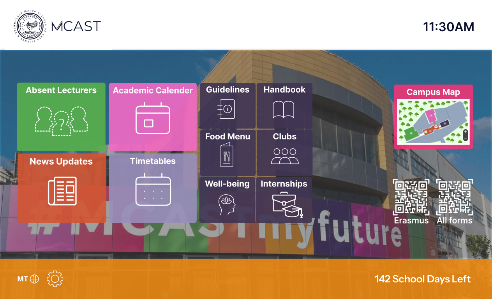
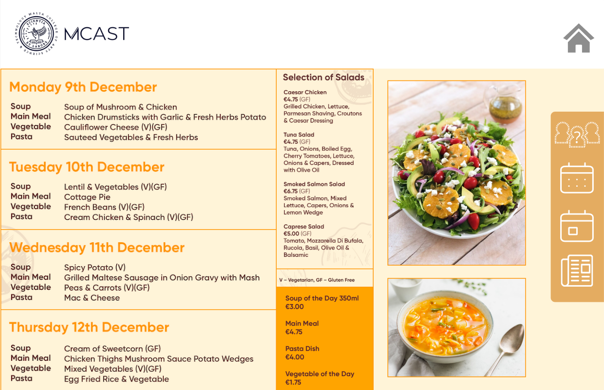
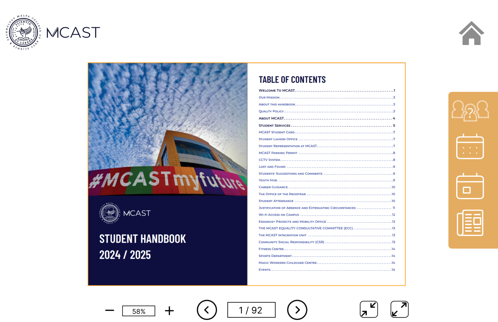

Interactive Noticeboard
This project is an interactive noticeboard designed to present important information in a clear and accessible way. The project focuses on usability, readable content, and simple interaction so users can quickly find the notices or updates they need.

Project Overview
The interactive noticeboard was created to organise information into clear sections. The aim was to make the interface easy to understand, allowing users to quickly scan notices, updates, and important content without feeling overwhelmed.
Key Features
- Clear notice layout
- Simple interactive sections
- Easy-to-read information display
- Organised content categories
- User-friendly visual structure
Interactive Elements
The project includes interactive elements that help users engage with the noticeboard instead of only viewing static information. The design supports quick navigation, clear content grouping, and a more engaging way to access updates or announcements.
Design Process
The design process focused on creating a layout that feels clean, structured, and easy to use. Since noticeboards often contain a lot of information, the interface was designed with strong spacing, readable text areas, and clear sections to improve usability.
Project Screens



<- Back to projects